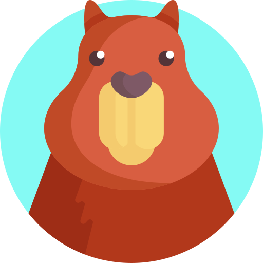

Mes projets

Database
Creating a database
C++
OOP
Website
Creating a website for a travel agency
HTML
CSS

C++ Video Game
Creating a Simple Video Game in C++
C++
OOP

Fishing Valley
Creating a Video Game in 24 Hours with the Godot Engine
C++
OOP

Attendance Management Software
Development of software to track entries and exits
C++
OOP

Calculation software
Development of a calculation software
C++
OOP